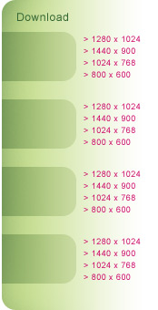

Breast Health Education Brochure
Learn simple steps that can help you take charge of your breast health today.
Pledge Program
The Susan G. Komen Race for the Cure® pledge program is a fun and effective way to raise money for the cause. As the pledge program grows, Susan G. Komen for the Cure® wants to be sure that our educational outreach expands as well. We are working to bring our pledge and education efforts through what we're calling a "pledge-u-cation" initiative, and we're asking you to join them.
Many people want to raise money but don't want know how to get started. Here are some basic tools that you can download and customize to fit your "pledge-u-cation” efforts. The I AM THE CURE.® breast health messages are incorporated into each of these pieces.
Fundraising Solicitation Letter (Sample)
Thank You Letter to Donors (Sample)
4 x 6 Fundraising Event Invitation Template (PDF) * | View Example
* For best results, use white cardstock and set your printer to print a 4 x 6 invitation (portrait set-up).
Remember to visit your Race's local website to create your own personal fundraising web page.
Email Tags
The Susan G. Komen Race for the Cure chants and the simple steps that lead to early detection will come to life as more than a million Komen Race for the Cure participants make I AM THE CURE.® their rallying cry on Race day. Help Komen share these important breast health messages with others by adding these tags to your email signature block
Chant 1: See your doctor, learn your risk!
Chant 2: Notice changes to your breasts!
Chant 3: Get mammograms and breast exams!
Chant 4: Start the fight by living right!
Icons for Social Networking Sites
Use the web button or I AM THE CURE.® logo to help guests at your social networking sites learn more about a positive breast health program by linking these icons to our site, iamthecure.org.
Downloadable Wallpapers
The following artwork wallpapers are provided to you FREE as a thank-you for taking the breast health quiz. If you can't see the image-size links for download, go take the quiz!
